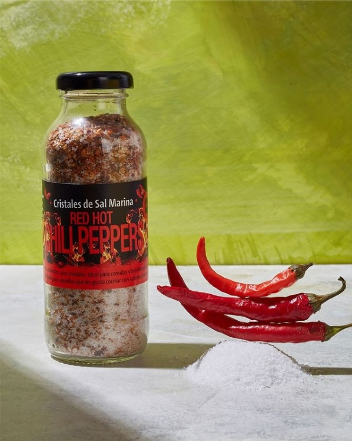

MEZCLA DE SALES

RED HOT CHILLI PEPPERS
Cristales de Sal marina con ardientes ajíes molidos. Ideal para comidas vibrantes que despierten temperatura. Pensado para aquellos que les gusta cocinar con sabores picantes robustos.
GINGER
Intenso sabor a jengibre que perfumará todas tus comidas. Los recomendamos para darle un toque especial a verduras, carnes blancas y sopas.

GARLIC
Es la perfecta combinación de sal marina y ajitos tostados para darle el sabor más rico a tus preparaciones!

DIJON
Cristales de sal marina con un clásico toque francés propio de la mostaza de Dijón. Se recomienda para darle sabor a carnes rojas y salsas.